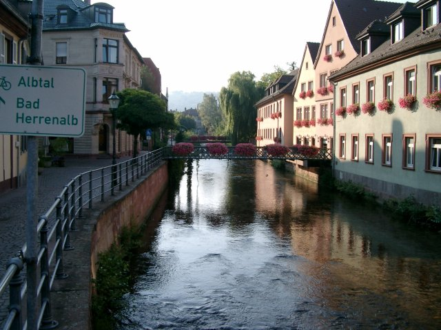
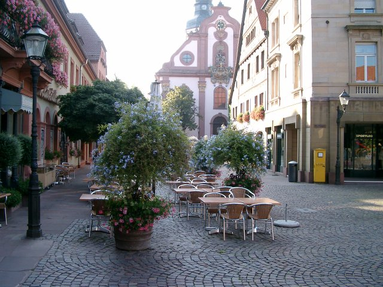

Елемент IMG впроваджує зображення в поточний документ у місці визначення елемента. Елемент IMG не має вмісту - він заміщається "на ходу" зображенням, зазначеним в атрибуті SRC.

Атрибут ALT надає короткий опис зображення. Він містить альтернативний текст, який відображається, якщо зображення не може бути виведено. Користувальницькі агенти повинні відображати альтернативний текст, якщо вони не підтримують зображення, або сконфігуровані так, щоб не показувати зображення (відключений показ зображень).

Атрибути WIDTH і HEIGHT задають розміри області зображення. Якщо обидва атрибуту не задані, розмір зображення буде визначено після його повного завантаження, після чого розміри області будуть змінені для розміщення змісту картинки.
Якщо заданий тільки один з атрибутів, то інший розмір буде вирахуваний у відповідність з пропорціями зображення і заданим атрибутом.
При вказівці обох атрибутів ПА «впише» зображення в область із зазначеними розмірами.
Атрибут ALIGN задає вирівнювання зображення як елемента рядка або робить його «плаваючим». У іншому випадку зображення перестає бути рядковим елементом і наступний за ним текст буде «обтікати» його.
У деяких елементах атрибут BACKGROUND дозволяє вказати зображення в якості фону. У цьому випадку воно заливає всю область елемента, починаючи з лівого верхнього кута.
| ... |